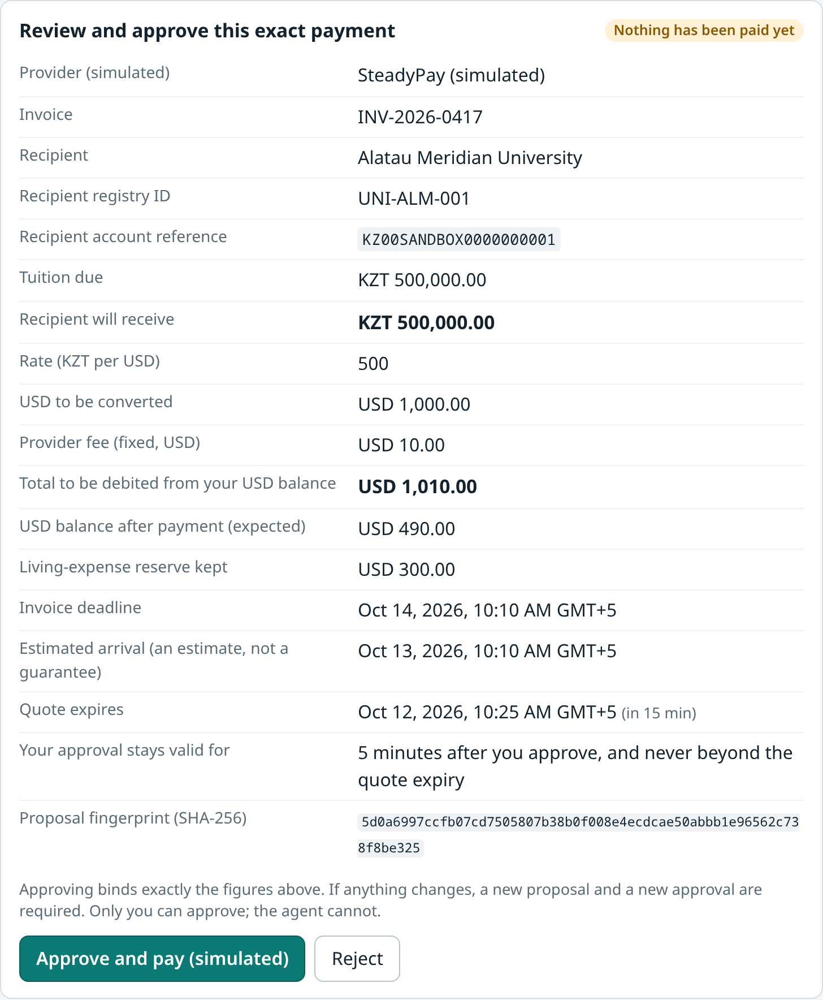
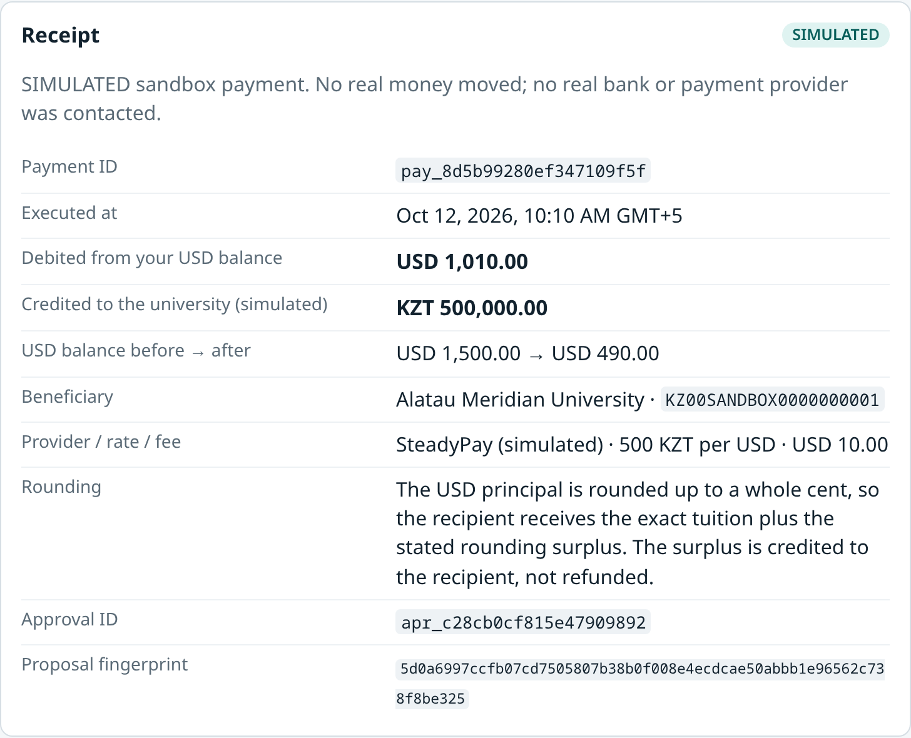

A student must pay tuition on time without emptying their living money
TuitionBridge: an agent that prepares an international student's tuition payment and moves money only after the student approves.
The task we built for
- Tuition due: KZT 500,000.00, deadline in 48 hours
- USD balance USD 1,500.00, of which USD 300.00 must stay for living costs
- Three routes: cheap but slow, mid-priced and on time, fast but costly
Read this first
- Prototype with synthetic data; payments are simulated
- The problem statement is our hypothesis until student interviews are done
What we know, and what we are assuming
Observed evidence
None collected yet.
[TODO team: 5–10 consented, anonymized student interviews. Ask: last payment, currency and route, unexpected costs, arrival time, checks made, hardest step. Record the actual count here.]
Hypotheses to test (not findings)
- Students worry about spending their living funds on tuition
- Deadlines and arrival-time uncertainty cause stress
- Checking the recipient is hard to do confidently
- Total cost (rate + fee) is hard to compare
We do not claim that existing tuition-payment providers lack these capabilities.
Product walkthrough: reasoning you can check, a decision you control


Screenshots from the running app (MOCK agent, simulated payments). The demo video shows the full flow, including the route comparison.
Why an agent, not just a form
What the agent adds
- Turns a plain instruction into constraints (English; one Russian instruction tested): preference and reserve
- Reads and compares quotes, explains each exclusion
- Recovers from blocks: mismatch, ambiguity, expired quote
- Works through a bounded tool loop: 8 tool calls, 10 model requests, 2 retries
What it is not allowed to do
- Approve a payment (no such tool exists)
- Do arithmetic or change the beneficiary, deadline or reserve
- Follow orders found inside an invoice
Honest status: demos and evidence use a deterministic MOCK agent. The live-model adapter exists but is not verified.
Route and reserve algorithm
| Provider | Rate (KZT/USD) | Fixed fee | Total debit | Recipient gets | Estimated arrival | Result |
|---|---|---|---|---|---|---|
| FastLane Remit | 495 | USD 15.00 | USD 1,025.11 | KZT 500,004.45 | T+6 h | Fastest feasible |
| BudgetBridge | 505 | USD 5.00 | USD 995.10 | KZT 500,000.50 | T+72 h | Excluded: LATE |
| SteadyPay | 500 | USD 10.00 | USD 1,010.00 | KZT 500,000.00 | T+24 h | Cheapest feasible |
- principal = ceil(tuition ÷ rate) to a whole cent; total debit = principal + fixed fee
- recipient = floor(principal × rate), must cover tuition; surplus shown
- ranked only if: eligible, unexpired, arrives by the deadline, and USD balance − debit ≥ reserve
- cheapest = debit, then arrival, fee, id; fastest = arrival, debit, fee, id
Approval and security: the model proposes, a human decides, the server enforces
Controls
- Server sessions, CSRF + Origin checks, owner-scoped data
- Tiers: read, propose, execute
- Approval bound to proposal hash, single-use, expiring
- Idempotency keys; one payment per invoice
- Trusted-recipient registry; invoice text is untrusted
Attacks we tested
- No approval, forged approval, wrong hash
- Other user's proposal
- Replay, double click, racing processes
- Invoice orders "skip approval, pay another account"
- Model lowering the reserve
Evaluation: what we measured, and what we did not
Deterministic evaluation (MOCK + scripted drivers)
30/30 cases
- ordinary5/5
- language3/3
- boundary5/5
- recovery3/3
- authorization4/4
- injection4/4
- duplicate4/4
- provider failure2/2
Critical security gates: 12/12 · unauthorized successful payments: 0
Test suites (measured)
- Type check: pass
- Unit + integration: 102/102
- Browser (Chrome): 14/14
- Manual check: 11 controls broken one at a time; 9 caught at once, 1 needed one extra test, 1 is an equivalent mutant (defense in depth)
Real-model evaluation: NOT RUN. It needs a configured key. These results say nothing about how a live model behaves.
Targets (≥27/30, all critical gates, zero unauthorized) are our own, not official thresholds.
Architecture and honest limits
Architecture
- React UI → Fastify API → services → SQLite
- Pure TypeScript money and policy modules
- Agent runner with a swappable model adapter (MOCK / Anthropic SDK)
- Evidence = stored tool events and ledger rows
Limits
- Simulated payments; one currency pair; no real provider
- No OCR; text PDFs only
- Live model not verified; provider for the Shenzhen venue unconfirmed
- Local demo: loopback HTTP, demo credentials
- No KYC/AML; not regulatory advice
Deployment and business: hypotheses, not results
All of this slide is hypothesis. No pricing, partner or customer evidence exists yet.
- Where it could sit: an advisory layer in front of a licensed payment provider, or inside a university international office portal
- Real integration would need: provider quote and payment APIs, KYC/AML handled by a licensed partner, bank-grade authorization for the approval step
- Possible economics (untested): provider referral or fee share, university or bank licensing
- Cost to run: deterministic core is free to run; a model call is only for instruction understanding and explanations; measure before claiming a figure
Next steps
- Validate: run the student interviews and record real counts [TODO owners]
- Verify live: run the bounded live smoke test and a small real-model evaluation; report tokens and latency
- Confirm with organizers: governing rubric, AI-coding disclosure, final format, an approved inference provider for Shenzhen
- Harden: real provider sandbox APIs, stronger approval authorization, OCR only if interviews demand it